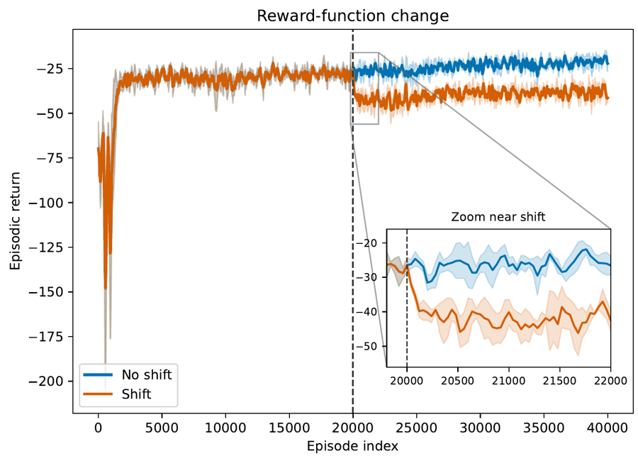

About
I am a PhD student in Computer Science at the University of Saskatchewan, where I work in the MADMUC Lab with Prof. Julita Vassileva. I am interested in what it takes for AI to work responsibly alongside humans.
My current research studies non-stationarity in cooperative multi-agent reinforcement learning, focusing on how agents can detect when their task or teammates change, and adapt to those changes. Before my PhD, I completed an MSc in Data Science, advised by Prof. Monireh Abdoos, where I worked on interactive reinforcement learning, and a BSc in Statistics, both at Shahid Beheshti University in Tehran.
News
Oct 2026
Presenting our paper on online change-point detection for cooperative MARL at PAAMS 2026 in Naples, Italy.
Jul 2026
Our paper “Online Change-Point Detection for Cooperative Multi-agent Reinforcement Learning” was accepted to the 24th International Conference on Practical Applications of Agents and Multi-Agent Systems (PAAMS 2026).
2026
Received the Amii Talent Bursary to attend Upper Bound 2026.
2025
Co-organized the 9th Symposium on Innovations in Computer Science & Applied Computing at the University of Saskatchewan.
2025
Received the Amii Talent Bursary to attend Upper Bound 2025.
2024
Co-organized the 8th Symposium on Innovations in Computer Science & Applied Computing at the University of Saskatchewan.
2024
Received the Amii Talent Bursary to attend Upper Bound 2024.
Sep 2023
Started my PhD in Computer Science at the University of Saskatchewan.
Sep 2023
Completed my MSc in Data Science at Shahid Beheshti University.
Scroll for earlier news
Publications

Online Change-Point Detection for Cooperative Multi-agent Reinforcement Learning
Fatemeh Saberi Khomami, Julita Vassileva
In Advances in Practical Applications of Agents, Multi-Agent Systems, and Computational Social Science: The PAAMS Collection (PAAMS 2026, Naples, Italy). Springer, to appear.